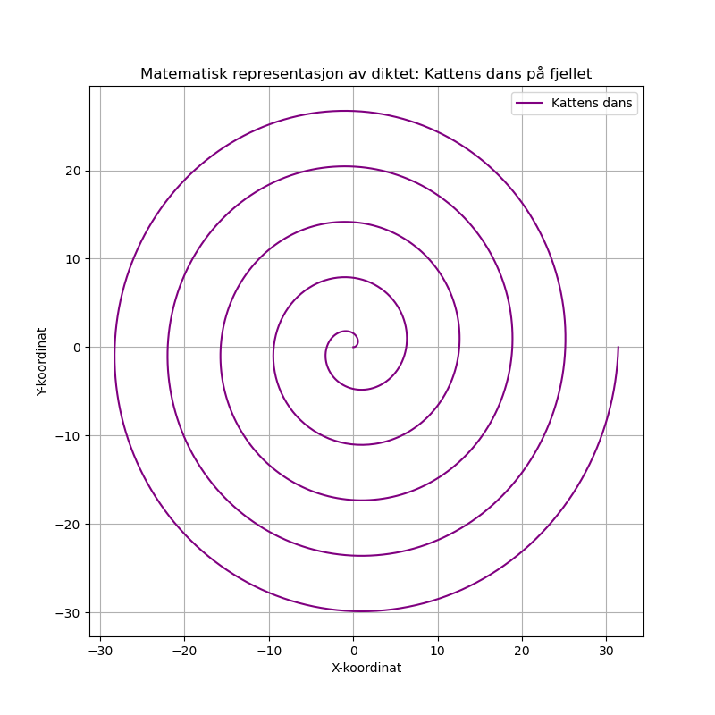

Dagens dikt
På toppen av fjellet står en ensom katt,
I vinden hvisker dens myke, ville prat.
Den hopper og danser i en spiral av glede,
Forevig bevegelsen i matematikkens rede.
En kurve som svinger, en kattens dans,
Å, naturens symmetri, en evig sjans.
Gjennom bølger og klipper, en harmoni,
Vi tegner en kattens evige melodi.

Kode
import numpy as np
import matplotlib.pyplot as plt
# Definer spiralen (kattens dans)
t = np.linspace(0, 10 * np.pi, 1000) # tidsparameter for spiralen
x = t * np.cos(t) # x-koordinat, spiralformet
y = t * np.sin(t) # y-koordinat, spiralformet
# Plot spiralen (kattens dans)
plt.figure(figsize=(8, 8))
plt.plot(x, y, label="Kattens dans", color="purple")
plt.title("Matematisk representasjon av diktet: Kattens dans på fjellet")
plt.xlabel("X-koordinat")
plt.ylabel("Y-koordinat")
plt.legend()
plt.grid(True)
# Vise grafen
plt.savefig('2025-03-20-20-01-59.png')